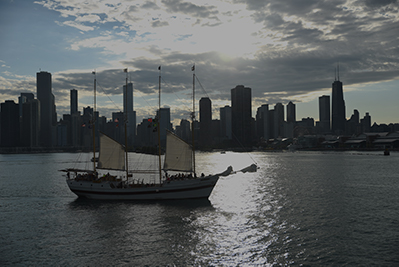
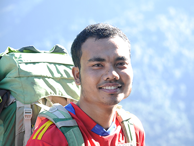
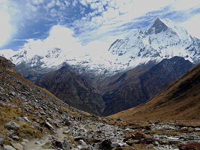

I love travelling to new places, getting to know new people, new food and spices, new culture. I am always amazed to see different people and the contrasts in lifestyles. The thing which may be wrong in one's eyes in one community is considered good in other community.

Recently, I visited Chicago, a city of skyscrapers, a very beautiful entertaining place which was just about five hours drive from London, Ontario. We were actually driving to Copper Mountain, Colorado to do some mountain climbing with a friend of mine. He is a professional mountain climber. He has already attempted climbing Mount Everest twice. His name is Robert Kay. At present he is on his third attempt to climb Everest. I hope and pray he will be successful this time.
I have climbed a few smaller mountains in my own country. A few years ago, I climbed to the base camp of Annapurna Mountain. It takes one about 3 days to get there. I took my wife a longer route and made it to the base camp in 6 days. They were memorable moments for both of us.

Annapurna Base Camp
